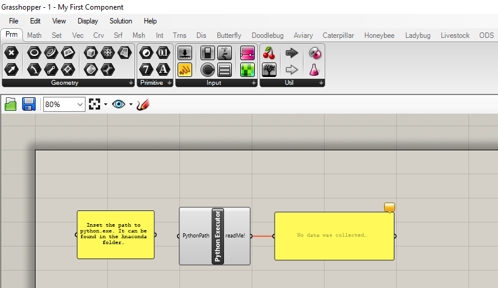
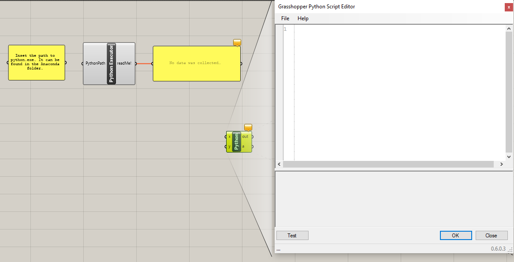
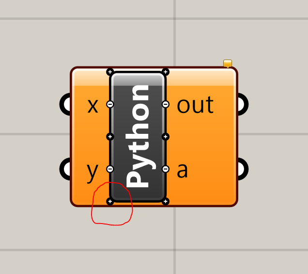

When you successfully installed the requirements for Livestock, then it is time to create your first component. Firstly you should open the Grasshopper script called "1 - My First Component.gh"

The script should contain two panels and a component called "Python Executor". We start by double clicking on the Grasshopper Canvas and type in "python" until the Python Script Component appears. Place it on the canvas.
Double click the component. A new window will appear.  This component should be able to take in a text string and a number, send that to CPython using the Livestock Template Method, and return a text file, where the original text string is repeated the number of time we specified. We start by typing in some imports:
# Imports
import os
import scriptcontext as sc
import subprocess
import livestock3d
Now we will write the functions we will use. For this component we will need five. The first function will write a data file. It looks like this:
def write_file(file_path, string, number_of_repeats):
file = open(file_path, 'w')
file.write(str(string) + '\n')
file.write(str(int(number_of_repeats)) + '\n')
file.close()
The function is simple:
- A file is created
- The text string is written to the first line of the file
- The number of copies are written to the second line of the file
The second function will write the template:
def write_template(template, path):
livestock3d.pick_template(template, path)
The function calls a function in the livestock3d library, which you placed in:
%appdata%\McNeel\Rhinoceros\5.0\scripts\livestock3d
We will take a look on that file in the next post, but let us finish with the component first.
The next function we need is a function that can run our template.
def run_template(py_exe, template_to_run):
thread = subprocess.Popen([py_exe, template_to_run])
thread.wait()
thread.kill()
This function will call python.exe (which we specified in the Python Executor component) on the template file.
The last two functions is to load the result file and print them out.
def load_file(file):
file = open(file, 'r')
lines = file.readlines()
file.close()
return lines
def print_lines(lines):
for line in lines:
print(line.strip())
When we have created all the functions it is time to use them. However it requires that we specify a couple of paths first and we need to "catch" the python.exe path from the other component.
# Get CPython path from the other component
py = str(sc.sticky["PythonExe"])
# Make folder
folder = r'C:/livestock3d/data'
if not os.path.exists(folder):
os.mkdir(folder)
# Specify paths
txt_file = folder + '/data_file.txt'
template_file = folder + '/my_first_template.py'
result_file = folder + '/result.txt'
# Run functions
if run:
write_file(txt_file, x, y)
write_template('my_first_template', folder)
run_template(py, template_file)
data = load_file(result_file)
print_lines(data)
The functions are put within a if statement, so they are only called if run is True. That means we have to create an input for run. We have to close the Python editor and and a new input to our component. You do that by zooming close to the component and you will see a small + signs at the bottom to the left. Just click that and change the name to "run". 
The complete component should look like this:
#------------------------------------------------------------------------------#
# Imports
import os
import scriptcontext as sc
import subprocess
import livestock3d
#------------------------------------------------------------------------------#
# Functions
def write_file(file_path, string, number_of_repeats):
file = open(file_path, 'w')
file.write(str(string) + '\n')
file.write(str(int(number_of_repeats)) + '\n')
file.close()
def write_template(template, path):
livestock3d.pick_template(template, path)
def run_template(py_exe, template_to_run):
thread = subprocess.Popen([py_exe, template_to_run])
thread.wait()
thread.kill()
def load_file(file):
file = open(file, 'r')
lines = file.readlines()
file.close()
return lines
def print_lines(lines):
for line in lines:
print(line.strip())
#------------------------------------------------------------------------------#
# Execution
# Get CPython path from the other component
py = str(sc.sticky["PythonExe"])
# Make folder
folder = r'C:/livestock3d/data'
if not os.path.exists(folder):
os.mkdir(folder)
# Specify paths
txt_file = folder + '/data_file.txt'
template_file = folder + '/my_first_template.py'
result_file = folder + '/result.txt'
# Run functions
if run:
write_file(txt_file, x, y)
write_template('my_first_template', folder)
run_template(py, template_file)
data = load_file(result_file)
print_lines(data)
Now it is time to take a closer look at the template. We will do that in the next post. My First Template